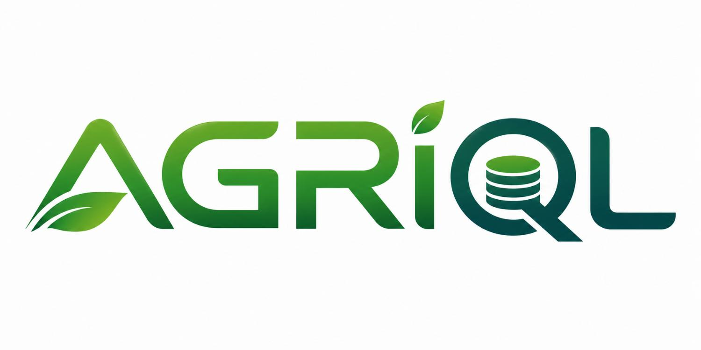
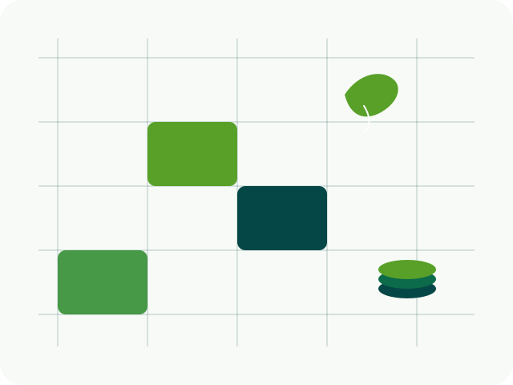
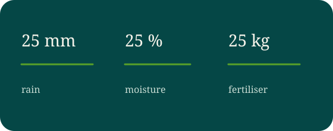

One file for the season
Readings from a farm or a trial stay together. The file can be copied, archived, and opened later without reconstructing a set of workbooks.

Database language 1.0
Soil, crop, water, and weather stay in one .aqdb file. A value keeps its unit. Analysis tools receive the result. They do not become the record.


Readings from a farm or a trial stay together. The file can be copied, archived, and opened later without reconstructing a set of workbooks.
A length is not added to a mass. Millimetres and metres can be added, because both are length. The check belongs with the data, not in a later script.
Excel, Python, and R can take a result. If the notebook is lost, the database file is still the record. An import also remembers the file it came from.
Difference
A general-purpose database will store farm tables. It treats a column as numbers or text. AgriQL is narrower, on purpose.
.aqdb file for a farm or a study.Use
One database for a farm, a trial, or a season.
CSV, TSV, JSON, or Excel. AgriQL records where the rows came from.
Count, minimum, maximum, average, and standard deviation on that table.
Missing values, unusual numbers, and gaps in a time series.
Export to CSV, JSON, or Excel. Or read the same file from Python, R, or Arrow.
Query
Import the sheet, ask for mean moisture by plant, then write the table back to Excel. A separate statement reports empty values and unusual numbers.
IMPORT CSV 'soil.csv' INTO agriculture.soil; SELECT plant_id, AVG(soil_moisture) FROM agriculture.soil WHERE soil_moisture < 25 GROUP BY plant_id; EXPORT XLSX agriculture.soil TO 'soil.xlsx'; PROFILE agriculture.soil;
Clients
Open the file and take the rows. pandas and Polars are optional.
import agriql
db = agriql.connect("farm.aqdb")
rows = db.query("SHOW SCHEMAS;").to_records()
The same file, returned as a data frame.
library(agriql)
db <- aqdb_connect("farm.aqdb")
aqdb_frame(aqdb_query(db, "SHOW SCHEMAS;"))
Move a table into an analysis file. Arrow does not open the database.
agriql-arrow write soil.tsv soil.arrows agriql-arrow read soil.arrows
Limits